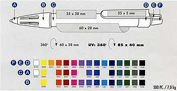

«Escribir o no escribir, esa es la cuestión»
~ César Vidal intentando quitarle el tapón a un boli antes de escribir una graaan novela
«¡A por ellos, que son pocos, gordos y tienen los ojos saltones!»
~ Comandante Grrr dirigiendo a su pelotón a la batalla de Boliland

Mira como se ríen de tí. ¿No crees que debes hacer algo con ellos?
Uno de los grandes quebraderos de cabeza de cualquier persona, por lo menos durante una etapa larga de su vida,es como ver tres en un burro es la de destapar un boli.
Para ello, la Frikipedia pone al alcance de la sociedad, una guía con la que por fin algún friki podrá presumir de saber hacer algo.
Desinteresadamente, aquesta enciclopedia administrada por niños de primaria que no saben contar dioses supremos, pone al alcance de cualquier friki numerosas guías como la de abrir una puerta o la de llenar un vaso de hagua.
En esta edición, daremos un paso adelante y pondremos una etapa más dificultosa.
Vale, tengo el boli, ¿Cómo le quito el tapón?
Bueno, parece que tu bolsillo de vagamundo ha dao pa un puto boli bic, aunque sea.
Ahora te quedará lo más difícil.
Que me lo digas ya leñe
 Nuestros espías en el país de los bolis nos han conseguido esta información inédita de la anatomía del enemigo.
Tá bien, hay distintas formas:
- Amenazar al boli con tortura psicológica, tipo: "O te abres o te peto y me hago un arroz con calamares con tu tinta".
Si no resulta, que es lo más probable, prueba cada una de estas otras opciones:
- Sujeta el tapón con los dos codos y sostenlo con las dos piernas por el otro lado, mientras tiras hacia arriba.
- Aprende técnicas de psicología inversa y pídele al boli que NO se abra.
- Incrústatelo en el bojete del culo y mientras haces fuerza con el esfínter, tiras con la mano.
- Dale repetidas veces unos golpes con la frente.
- Llama a la fábrica pa que te envíen a un tío del servicio técnico y que te lo abra él.
- Haz el gravitón al 2 para conseguir la suficiente energía para tener fuerza para abrirlo
- Mételo en un vaso de hagua y esperar a que se reblandezca y se destape solo.
- Hazle cosquillas en la base (eso les jode un huevo...)
- Amenázale con usar un lápiz en su lugar.
- Inyéctale un somnífero con el objetivo de que se duerma y puedas experimentar más opciones con más tranquilidad.
- Reza al MEV para que te de fuerza y coraje.
- Toma como rehenes a sus amigos la regla, la pluma y el lápiz para que se acojone un poco.
- Si el anterior paso no funciona, alíate con su enemigo más mortal: el tipp-ex.
- Bombardeale con chorros de ácido.
- Construye un arma de destrucción masiva de bolígrafos y hacer un muro para acordonar su territorio.
- Quítale todas las aldeas para que se muera de hambre y así entrar en su foro y capturarlo.
- Diseña, construye y programa en el garaje de tu casa un robot capaz de destapar bolis.
- Contrata un mono ayudante experto en la materia.
- Cuelga al boli de sus genitales con una cuerda atada desde el techo.
- Compra un boli que no tenga tapón; que se apriete en la parte superior.
- Mételo en la nevera durante horas o días si hace falta hasta que se rinda.
- Si no funciona, prueba con el microondas.
- Atarlo a una silla, sujétale los párpados con esparatrapo y obligarle a tragarse 2 000 capítulos de Cuéntame con imágenes inéditas en televisión.
- Oblígale a ver 2girls1cup (ahí es casi imposible no ganar).
- Amenázalo con encerrarlo en un armario.
- Cada vez que duerma, apágale la luz (sí, tienen miedo a la oscuridad).
- Tortúralo constantemente con vídeos del Aquí hay tomate.
- Cámbiale el cartucho de tinta por uno de otro color (equivale en los humanos a una violación…).
- Abre la ventana, tira un petardo, el petardo explotará y las cabras del monte se asustarán e invadirán las autopistas, se creará un atasco de 400.000.000.000.000 cm, chuck norris se enfadará y dará una patada a su coche haciendo que éste explote, por lo cual explotarán todos los coches en una reacción en cadena y por la teoría del cambio climático, la temperatura subirá 10 grados y morirán el 566% de las especies de la tierra, greenpeace se enfadará e invadirá estados unidos y obligará a repoblar la tierra por medio de la zoofilia, el mundo se superpoblará y pozí se caerá al suelo al perseguir una cabra para violarla, se golpeará la cabeza con una piedra, a la que hará salir despedida a una velocidad de 456.888 metros por segundo, rompiendo la ventana de tu habitación, tu boli se asustará y se caerá de la mesa, quitándosele el tapón (oye, ¿quién dijo que era fácil).
- Grítale a tu boli "ワヰヱヲンヴヵヶばワヰヱヲンヴヵ" mientras haces el pino chupándote un pie, victoria asegurada.
- Si no funciona amenázale con μνξοπρςσ Ψ ΣΤΥΦΧΨ οπρ ξοπρςστυφχψω mientras te chupas el codo y pones los ojos en blanco, tu boli se asustará y se abrirá solo.
- Tírate a un contenedor de fluidos radiactivos para convertirte en un superheroe con super-fuerza, después dile a tu boli que se abra diciéndole "por favor", y quizás lo haga.
- Llama al sereno para que intente abrilo (lástima que ya no existan)
- Quítale la tapa (es lo mas fácil)
 De: La Frikipedia, la enciclopedia extremadamente seria.
De: La Frikipedia, la enciclopedia extremadamente seria.